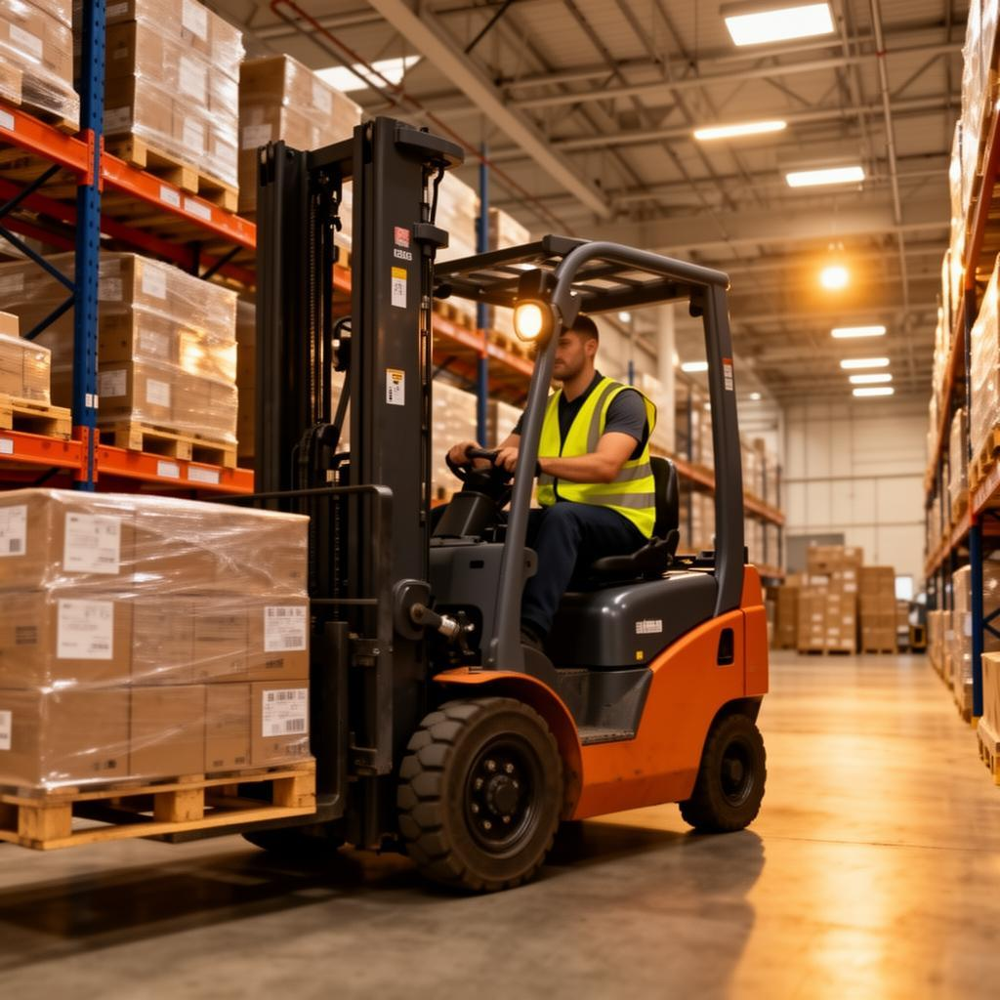

Forklift Safety Starts Before You Drive

FleetSafe helps forklift operators and supervisors complete pre-operation inspections, identify equipment defects, and promote safer workplace operations.
Inspect. Report. Verify. Operate safely.
Start Pre-Shift InspectionPre-Operation Inspection
Before operating a forklift, inspect the equipment to make sure it is safe and ready for use. Check important areas such as the tyres, forks, mast, brakes, steering, lights, horn, seat belt, and fluid levels.
View the Inspection GuideSafe Forklift Operation
Safe forklift operation requires following workplace rules, wearing the required personal protective equipment, keeping a clear view, and watching for pedestrians and other hazards.
View Safety TipsSupervisor Dashboard
Supervisors can review submitted inspections, monitor reported defects, record follow-up actions, and update inspection statuses.
Open Supervisor DashboardOur Safety Priorities
- Inspect the forklift before each shift.
- Report defects promptly.
- Protect pedestrians and other workers.
- Follow approved repair and verification procedures.
- Do not operate equipment considered unsafe.
Our Commitment
Every operator, supervisor, and maintenance team member has a role in workplace safety. FleetSafe supports this responsibility by organising inspection information and encouraging proper defect follow-up.